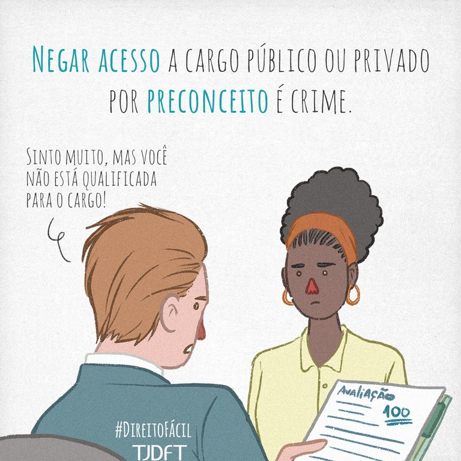

Racismo e desigualdade social

Apesar de ser um país com mais de 50% da população negra, o Brasil ainda vive um verdadeiro abismo racial quando se trata do acesso à saúde. Uma das soluções para tornar este acesso igualitário foi a criação da Política Nacional de Saúde Integral da População Negra (PNSIPN), alinhada aos princípios do Sistema Único de Saúde (SUS). Essa política é resultado da luta e mobilização da sociedade civil, e tem como objetivo reconhecer o racismo, as desigualdades étnico-raciais e o racismo institucional como determinantes sociais das condições de saúde, com vistas à promoção da equidade em saúde na população brasileira. No mês da Consciência Negra, a Agência Aids traz dados sobre os desafios do acesso à saúde, em especial da luta contra aids entre a população negra brasileira, a que mais morre em decorrência da aids. Por séculos a população afro-brasileira tem buscado condições dignas de viver em sociedade e, mesmo com alguns direitos conquistados, está longe do ideal. De acordo com a Associação Brasileira de Saúde Coletiva (Abrasco), o racismo à brasileira tem inviabilizado o acesso da população negra aos serviços de saúde de qualidade, o que só piorou com a chegada da pandemia de Covid-19. Estudos mostram que o racismo e a desigualdade social são barreiras que dificultam o acesso a tratamentos de qualidade e medicamentos, o que afeta diretamente as condições de saúde dos negros no Brasil. Isso resulta na diminuição da expectativa de vida: estima-se que brancos vivam, em média, cerca de três anos a mais do que pretos.
Vale lembrar que o Brasil é o maior país do mundo em população afrodescendente fora da África.
De acordo com o IBGE (2019), 46,8% se autodeclararam como pardos e 9,4% como pretos. A soma constitui a maioria dos brasileiros: 56,2%
Mas como estão os cuidados com a saúde dessa população?
Implantada em 2009 com o intuito de combater o racismo institucional no SUS (Sistema Único de Saúde), a Política Nacional de Saúde Integral da População Negra mostra que 11,9% dos negros já se sentiram discriminados em um serviço de saúde.
Aponta ainda a precocidade das mortes em negros, as doenças mais frequentes, os altos índices de violência obstétrica e mortalidade materna e infantil.
O racismo vamos além de preconceito e discriminação.
Há diferentes tipos de racismo, como o institucional, que é menos evidente, e ocorre quando instituições públicas e privadas praticam a discriminação, limitando ou dificultando o acesso à saúde.
A primeira barreira é geográfica: os grandes centros médicos, que oferecem serviços de média e alta complexidade, costumam ficar distantes das periferias, onde se concentra a população negra.
O problema é mais evidente no SUS porque a maioria dos brasileiros que depende exclusivamente dele são negros.
“Numa sociedade racista, não basta não ser racista, é preciso ser antirracista”.
A frase da ativista Angela Davis ecoou no mundo inteiro e expôs que para combater o racismo institucional (também na saúde) é preciso que toda a sociedade, principalmente os brancos, se manifeste.